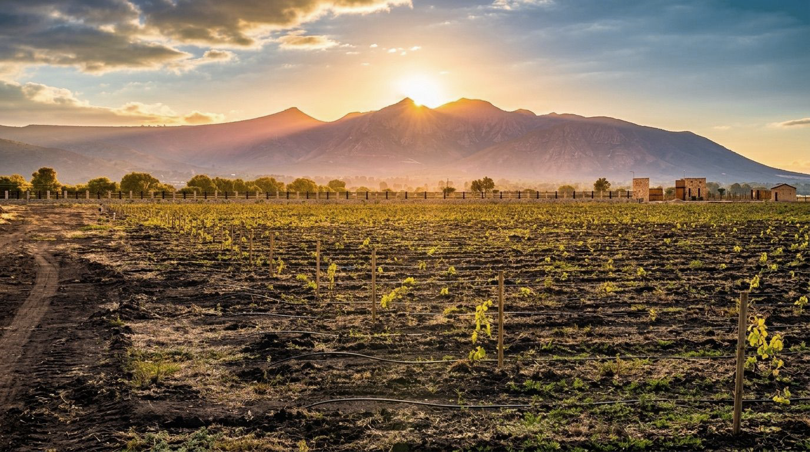
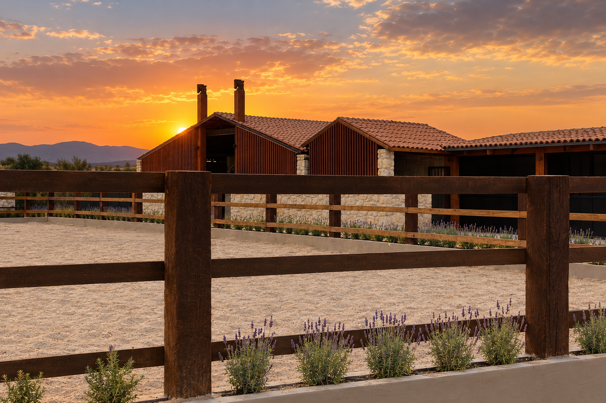
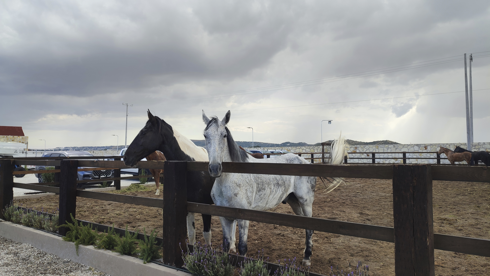
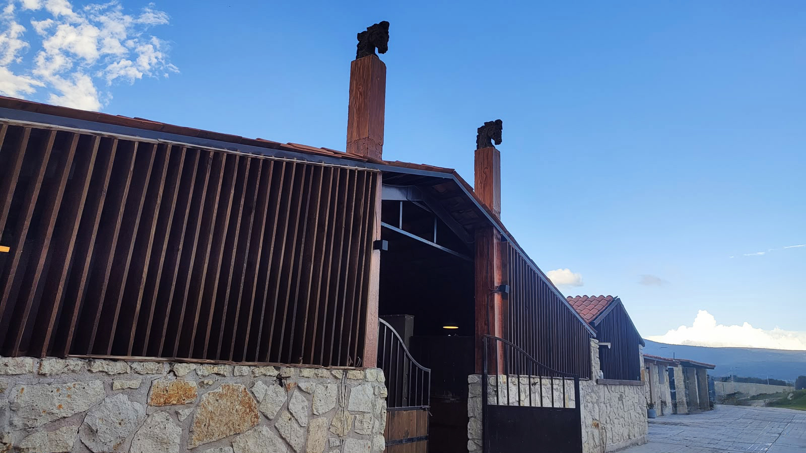
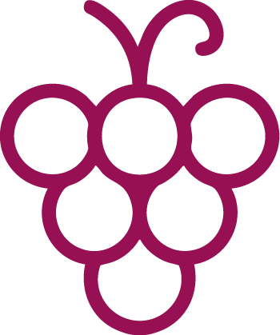

CABALLERIZA
Un encuentro
con la naturaleza
Nuestra caballeriza forma parte del encanto de Mata de Uva y refleja la conexión del lugar con la naturaleza y la vida al aire libre. Desde aquí parten las cabalgatas que permiten recorrer y disfrutar el paisaje del viñedo desde una perspectiva diferente.



VISÍTANOS
Ven a conocer Mata de Uva
Las fotografías muestran una parte de lo que somos, pero recorrer nuestros espacios te permitirá descubrir todo lo que hace especial a este lugar.
Agenda una visita y conoce de cerca el paisaje, las instalaciones y las posibilidades que Mata de Uva tiene para ti.
Agenda una visita
Nosotros
Un espacio natural que da
vida a experiencias únicas.
Eventos
Celebra momentos especiales
en un entorno inolvidable.
Experiencias
Catas, recorridos y actividades
para todos los sentidos.